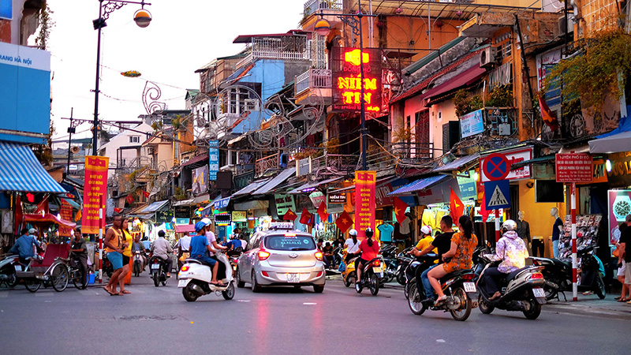

Dreaming of epic travels without breaking the bank? With Tourist Guide AI, discover budget-friendly destinations, save on routes, and get real-time tips to stretch your dollar. Let’s explore how to travel cheap in 2025 and make every adventure unforgettable. Check our Solo Travel Guide for more travel inspo!
Budget travel is booming in 2025 as travelers prioritize affordability amid rising costs (Skift, 2025). Thanks to low-cost airlines, hostels, and apps like Tourist Guide AI, you can explore Hanoi’s street food stalls or Budapest’s historic baths for a fraction of the price. Social media, especially #BudgetTravel on X, inspires with hacks like $5 meals and free walking tours. Whether you’re a student or a savvy explorer, cheap travel lets you see the world without draining your wallet.
These destinations offer incredible value for budget travelers, with low costs and vibrant experiences:
Hanoi is a budget traveler’s paradise with $2 pho bowls and affordable hostels starting at $5/night. A 2-hour AI-guided walk through the Old Quarter leads to bustling markets and Hoan Kiem Lake, perfect for soaking in local culture. Use Tourist Guide AI to find free temple visits or cheap street food stalls for under $1.
Budapest combines affordable Europe with stunning architecture, like the Parliament and thermal baths for under €10. A 1.5-hour AI-guided route along the Danube hits free landmarks like the Chain Bridge. Tourist Guide AI suggests budget eats, like goulash for $3 at local markets.
Cairo offers budget-friendly access to ancient wonders, with $5 pyramid tours and $2 falafel meals. A 2-hour AI-guided walk through Khan el-Khalili bazaar uncovers affordable souvenirs. Use Tourist Guide AI to navigate safe routes and find hostels for $8/night.
Mexico City is a vibrant, budget-friendly hub with $1 tacos and free museums like Museo Soumaya. A 1-hour AI-guided stroll through Zócalo square hits historic sites like the Templo Mayor. Tourist Guide AI helps find cheap metro routes (30¢ per ride) and safe cantinas.
Krakow’s medieval charm comes cheap, with $10 hostel beds and $2 pierogi meals. A 1-hour AI-guided walk through the Old Town includes Wawel Castle and free market squares. Use Tourist Guide AI for budget-friendly day trips to Auschwitz or the Salt Mines.
Lima offers coastal views and $3 ceviche plates, perfect for budget travelers. A 1.5-hour AI-guided route through Miraflores includes free parks and affordable markets. Tourist Guide AI suggests cheap bus routes to nearby ruins like Pachacamac for under $5.
Maximize your travel budget with these smart strategies:
Traveling in spring or fall, like April in Budapest or October in Hanoi, cuts flight and hotel costs by up to 30%. Use Tourist Guide AI to check local events and avoid peak tourist crowds. This saves money and ensures a more relaxed experience.
Public transport, like Mexico City’s 30¢ metro or Cairo’s $1 buses, is a budget traveler’s best friend. Tourist Guide AI integrates with apps like Citymapper to find the cheapest routes in real-time. Always buy multi-day passes for extra savings.
Street food, like $1 tacos in Mexico City or $2 pho in Hanoi, is cheap and authentic. Use Tourist Guide AI to locate trusted vendors and avoid overpriced tourist traps. Check X for local foodie tips using #BudgetTravel.
Hostels in Krakow ($10/night) or Lima ($8/night) offer clean, social stays with kitchens to cook your own meals. Tourist Guide AI suggests safe, budget-friendly hostels near city centers. Book via Hostelworld for deals and reviews.
Many cities, like Budapest’s free walking tours or Mexico City’s Museo Soumaya, offer no-cost attractions. Use Tourist Guide AI to plan routes hitting free sites, like Lima’s Parque del Amor. Search X for #FreeThingsToDo for local tips.
These tools, alongside Tourist Guide AI, help you save money and travel smarter:
Skyscanner’s “Everywhere” feature finds budget flights, like $50 one-way to Budapest. Use it with Tourist Guide AI to plan routes once you land. Check deals early for the best prices.
Hostelworld lists budget stays, like $8 dorms in Cairo, with user ratings for safety and vibe. Pair with Tourist Guide AI to find hostels near key attractions. Filter for free cancellation to stay flexible.
Rome2rio shows cheap travel options, like $5 buses from Krakow to Zakopane. Use it with Tourist Guide AI’s offline maps for seamless navigation. Check for student discounts to save more.
Revolut offers near-market exchange rates, saving you on $3 meals in Hanoi or €5 baths in Budapest. Use it with Tourist Guide AI to budget for local expenses. Monitor rates daily for the best deals.
X’s #BudgetTravel hashtag reveals hacks like free museum days in Lima or $2 meals in Cairo. Follow local travel accounts and use Tourist Guide AI to verify tips. Share your own finds to build community.
Pack smart to avoid fees and stay light on a budget:
A 30-40L backpack like the Osprey Farpoint fits carry-on rules, saving $20+ on flights to Hanoi. It’s ideal for navigating crowded markets in Cairo or Krakow. Choose one with lockable zippers for hostel stays.
TSA-approved locks protect your belongings in $8 hostels in Lima or busy areas like Budapest’s markets. Opt for combination locks to avoid key hassles. Use them consistently for peace of mind.
A collapsible water bottle cuts costs in touristy spots like Mexico City’s Zócalo, where drinks can cost $3. Refill at free stations or cafés, as suggested by Tourist Guide AI. It’s eco-friendly and budget-smart.
A 10,000mAh charger ensures Tourist Guide AI stays active for navigation in Cairo or Budapest. Pick a compact model for your daypack. Charge it nightly to avoid disruptions.
Three shirts, one jacket, and convertible pants work for Lima’s coast or Krakow’s streets, avoiding airline fees. Wash clothes at hostels to keep your load light. Tourist Guide AI can find nearby laundromats.
Tourist Guide AI is your budget travel buddy, offering tools to keep costs low and adventures high. Lost in Hanoi? Ask, “Where’s the cheapest pho nearby?” Here’s how it helps: